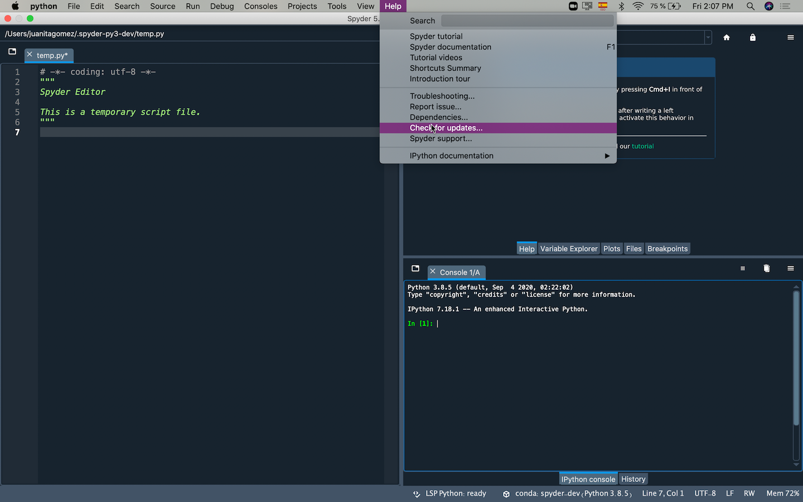
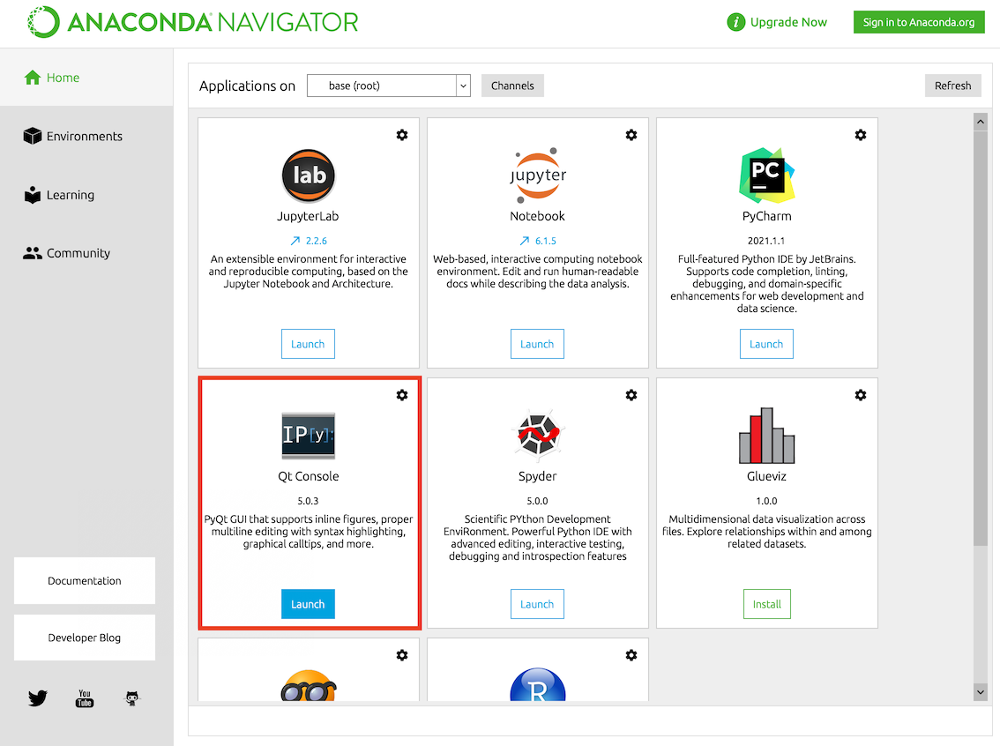
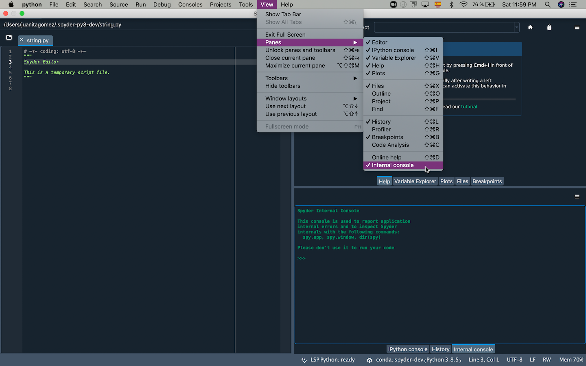

Primera ayuda básica#
Estas sugerencias, si bien son más un enfoque de shotgun, tienden a arreglar la mayoría de los problemas informados por sí solos.
Pasos recomendados para la solución de problemas#
Reinicia Spyder, y prueba lo que estabas haciendo antes de nuevo.
Actualiza Spyder a la última versión, y puede que encuentres que tu problema está resuelto (junto con nuevas características, mejoras y otras correcciones de errores). Los lanzamientos menores salen cada par de meses, así que a menos que se haya actualizado recientemente, hay una buena posibilidad de que tu versión no sea la última. Puedes encontrar con el comando Buscar actualizaciones en el menú de Ayuda.
Para realizar la actualización con Conda (altamente recomendado), desde tu terminal (o en el Anaconda Prompt en Windows):
conda update anaconda conda update spyder
Actualiza las dependencias y el entorno de Spyder, instalando la última versión de tu distribución (p. ej. el recomendado Anaconda), o con el comando correspondiente «update all» en tu terminal (o en el Anaconda Prompt en Windows). Para obtener la última versión estable de todo usando Conda puedes ejecutar:
conda update qt pyqt spyder-kernels ipython ipykernel jupyter_client jupyter_core pyzmq
Reinicie tu máquina, en caso de que el problema resida en un proceso de permanencia o de cualquier otro tipo.
Restaura los archivos de configuración de Spyder a sus valores predeterminados, lo que resuelve una gran variedad de problemas de Spyder. Desde tu terminal (o en el Anaconda Prompt en Windows), ejecuta:
spyder --resetNota
Esto restablecerá tus preferencias, así como cualquier atajo de teclado personalizado o esquemas de resaltado de sintaxis. Si te preocupa especialmente alguno de ellos, deberías hacer una copia de la carpeta
.spyder-py3en tu directorio de inicio de usuario (C:/Users/YOUR_USERNAMEen Windows,/Users/YOUR_USERNAMEen macOS, o/home/YOUR_USERNAMEen Linux), y restaurarlo después si esto no resuelve el problema.Intenta instalar Spyder en un nuevo entorno Conda (recomendado) o
virtualenv/venv, y mira si el problema vuelve a producirse.
En tu terminal de sistema (o en el Anaconda Prompt en Windows), ejecuta los siguientes comandos para crear un entorno fresco y limpio e iniciar Spyder en él:
conda create -n spyder-env spyder -y
conda activate spyder-env
spyder
Si esto soluciona el problema es porque probable el problema se deba a otro paquete instalado en tu sistema, especialmente si se hace con pip que puede causar muchos problemas y debe evitarse si es posible.
Mira nuestro vídeo para resolver y evitar problemas con pip, Conda y Conda-Forge, y sigue sus instrucciones.
Reinstalar Spyder#
Si ninguno de los pasos anteriores resuelve tu problema, deberías hacer una desinstalación completa de Spyder por el mismo medio que lo hayas instalado originalmente.
Para Anaconda, sigue todos los pasos bajo la opción B en la Anaconda uninstall guide, borra el directorio de Anaconda dondequiera que fue instalado originalmente, y (en Windows) elimina el directorio %appdata%/python si existe.
Luego, haz una instalación limpia de la última versión de la Anaconda distribution que es la forma en que te recomendamos instalar Spyder y mantenerlo actualizado.
Importante
Aunque eres bienvenido a hacer que Spyder trabaje por tu cuenta por uno de los muchos otros medios que ofrecemos, solo podemos proporcionar soporte individual para problemas relacionados con la instalación para los usuarios de la distribución Anaconda. En particular, la instalación de pip, aunque factible, es realmente para expertos ya que hay muchas dificultades involucradas y diferentes problemas específicos para su configuración, por eso recomendamos usar Conda siempre que sea posible. Para más información, por favor visite nuestro Install Guide.
Aislar problemas#
Si obtienes un error al ejecutar una línea, bloque o programa específico, puede que no sea un problema con Spyder, sino más bien algo más bajo en los paquetes de los que depende. Intenta ejecutarlo de la siguiente manera en orden hasta que comience a funcionar como esperas. Si logras aislar el error, repórtarlo al último en el que no funciona.
¡Spyder mismo, por supuesto! Asegúrate de que puedas reproducir el error después de cerrarlo y reabrirlo, si es posible.
Una instancia de QtConsole, por ejemplo, lanzada desde el navegador Anaconda o desde Anaconda Prompt/Consola/línea de comando (Windows/Mac/Linux) con
jupyter qtconsole.QtConsole es el backend de la consola GUI Spyder del que depende para ejecutar su código, así que la mayoría de los problemas involucrando Terminal de IPython son en realidad algo relacionado con QtConsole y pueden ser reportados a su issue tracker.
Un intérprete de línea de comandos IPython lanzado con, por ejemplo,
ipythondesde Anaconda Prompt/Consola/línea de comandos (Windows/Mac/Linux). Los errores reproducibles pueden ser reportados a su Github page, aunque primero asegúrate de leer sus directrices y documentos.Un intérprete estándar de Python que puedes ejecutar como un archivo de script con
python path/to/your/file.pyo interactivamente conpythondesde Anaconda Prompt/Consola/línea de comandos (Windows/Mac/Linux). Aunque no es imposible que hayas encontrado un error en Python, es mucho más probable que sea un problema con el código en sí mismo o con un paquete que estés usando, así que tus mejores fuentes son la Python docs y los demás recursos listados anteriormente.
Truco
Si el problema se reproduce de forma similar o idéntica con cualquiera de estos métodos (aparte de Spyder en sí), entonces casi con toda seguridad no es un problema con Spyder, y sería mejor manejarlo en otros lugares. Como normalmente no somos capaces de hacer mucho sobre problemas no relacionados con Spyder, un foro como Stack Overflow o la documentación de paquetes relevantes son lugares mucho más apropiados para obtener ayuda o reportar el problema.
Vea la sección Pedir ayuda para conocer otros lugares para buscar información y asistencia.
Depuración y ajuste del código de Spyder#
Si conoces Python, a menudo puedes diagnosticar e incluso solucionar los problemas de Spyder tú mismo, ya que la IDE está escrita en el mismo idioma que utilizas en él. Puedes explorar los mensajes de error que estás recibiendo y el funcionamiento interno de Spyder con la Terminal interna, disponible bajo el menú .
Para obtener una salida de depuración más detallada, inicia Spyder desde la línea de comandos (Anaconda Prompt en Windows) con spyder --debug-info verbose.
Incluso si no logras solucionar el problema por ti mismo, esta salida puede ser muy útil para ayudarnos a reducir rápidamente y resolver tu problema por ti.